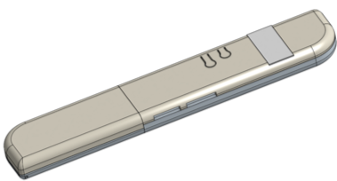

Sonic Screwdriver
(WORK IN PROGRESS)
My current project is creating a sonic screwdriver, inspired by the device (of the same name) in Doctor Who.
The goal is to have a pocket sized device with a wide array of sensors and effectors, allowing different functions to be programmed into the device. The PCB was designed in KiCAD, and fabricated by OSHPark. The case was designed in Onshape, to be 3d printed. Several openings along the case allow for the sensors to be properly exposed.
ABS Case, Onshape

PCB Schematic rev. 3, KiCad. Originally planned to use the ARM Cortex M0+ microcontroller (similar mcu to Arduino Zero's).


Repurposed "reflow oven". Marked improvement from the frying pan model.


Populated PCB solder in reflow oven; remaining will be hand-soldered. I replaced the ESP8266 with the more robust ESP-12S in this revision. This is especially useful for adding new functions over wifi and planned communication with the Raspberry Pi server.